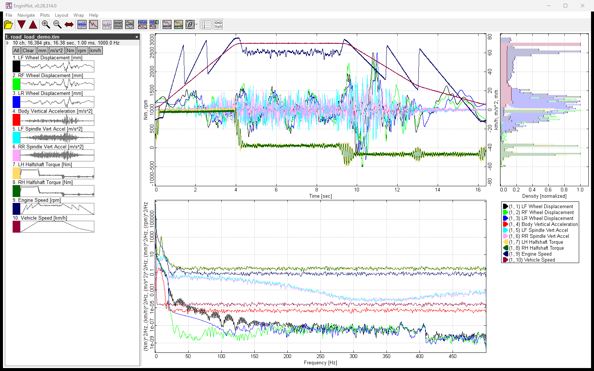

Rapidly look at a data set and make sense of it. Point it at a file and the traces are on screen — tens of millions of samples, plotted and ready to explore.
Open the file you already have — RPC3, PLT, fstrm, CSV or space-separated text, tidy or not. No importing into Excel, Python or MATLAB first, and no per-format ritual: every data set opens the same way.
Do the analysis you need with time, frequency, histogram views which are intuitive.
No bling. Just raw function to help an engineer understand a data set.

All screenshots use synthetic data.
Point at a channel in the file tree and it is drawn on its own over the plot, the rest dimmed behind it, with its minimum, maximum, mean, RMS, crest factor and skewness underneath — and, on a frequency plot, its peak and roll-off, its noise floor, bandwidth and dynamic range. Read through twenty channels without plotting any of them.
RPC3, PLT/SimCreator, fstrm/Moog F-Stream, CSV and space-separated text, with header, unit and date-time detection — and a CSV reader that opens files other tools refuse.
Time histories, PSD in engineering units or dB, cross-spectra as a matrix or overlaid, and per-channel histograms, all computed in the background so switching views is instant.
Overlay, stack one per row, or group rows by engineering unit — with a second Y-axis placed automatically when channels span very different ranges.
NaNs, infinities, impossibly large values, subnormals and dead channels are flagged in the channel list — and plotted on a dedicated rail instead of wrecking the scale.
Read values off either axis under the pointer. On a frequency plot the cursor lands a labelled line on every harmonic of the peak you point at.
Smooth at 150 million plotted points, from a single self-contained 1.3 MB .exe. No installer, no dependencies, no companion DLLs.
I’m a big believer in software that is easy and intuitive to use.
In tools like MATLAB, Excel and Python, plotting is script driven. There’s an import step, then a processing step, then a plot that is fixed in ways you can’t easily change. It works, but it is unnesicerily cumbersome, and it stands between you and the question you actually have: what is in this data?
Over the years I tried to build the plotter I wanted — in C++ with wxWidgets, in Java, and in C# with WPF. Each time I found myself fighting the UI framework, which was helpful and "in the way" at the same time.
In the fall of 2023 I started watching Casey Muratori’s Handmade Hero series and coding along with it. After a while I tried building a plotter his way: keep it simple and flat, one unity build, the plain Win32 API, render everything yourself, no dependencies.
I wrote the plotting engine for speed, drawing pixels straight into memory and blitting them to the screen. It worked very well. I quickly had a plotter that was fast, small and minimally functional, and in 2024 I began using it for real work. I kept chipping away at features after that, but it was a nights-and-weekends project and progress was slow.
By December 2025 it was clear to me that AI-enabled agentic coding had turned a corner, and in the summer of 2026 I started experimenting with it. One of my first projects was this plotter. First I had the AI scan it for problems and fix the bugs it found, then write tests for each module. After that I started adding features — at first working closely together, especially where performance was key, and then, for the nice-to-have features, with the AI doing the heavy lifting.
All of the AI work on this project has been done with Anthropic’s Claude: Opus 4.8, 5 and 5.5, and Fable 5 while it was free.
I built EnginPlot to be helpful to me. If you’re in the same boat, I hope you find value in it too.
If you try it and like it, let me know. The same goes for a bug you run into or a feature you’d like. I’m particularly interested in expanding the kinds of files it can read — if EnginPlot can’t open yours, tell me about it.
EnginPlot is free and runs on Windows 10+. Version 0.29, 1.3 MB, no installer.
Download latest releaseKnew it as PlotIt? Download as PlotIt.exe — the same program under its earlier name, keeping its own settings.
Nothing to open yet? Download example data (.zip, 1.2 MB) — all synthetic, generated for testing. Or generate your own with the sample-data scripts.